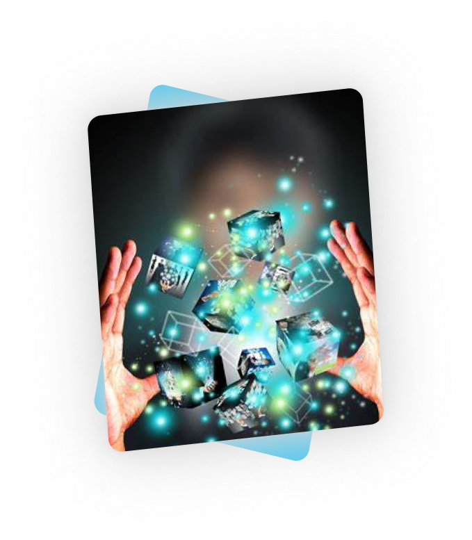

<section class="whySection">
  <div class="container whyContainer">
    <div class="row">
      <div class="col-lg-12 text-center">
        <h1 class="whText">Why us?</h1>
      </div>
    </div>
    <div class="whyBox">
      <div class="row">
        <div class="col-lg-4">
          
        </div>
        <div class="col-lg-6 innTextsection">
          <h3 class="h3Innovativetxt">Innovative</h3>
          <p class="pInntext">
            GoolRant strongly believes in the virtues of forward-thinking that
            is reflected in the service and products that are out-of-the-box.
            GoolRant's futuristic software solutions have always delivered
            unparalleled performance metrics that reignite growth in the
            businesses of its customers. By following a holistic approach of
            innovating tech-driven resources, GoolRant empowers you to tackle
            all the evolutionary challenges in the digital space. Creating
            innovative digital solutions has always been the top priority of
            GoolRant.
          </p>
        </div>
      </div>
    </div>
    <div class="personalizedBox">
      <div class="row">
        <div class="col-lg-6 personalizedTextsection">
          <h3 class="h3personalizedtxt">Personalized</h3>
          <p class="ppersonalizedtext">
            Over the years, GoolRant has been able to successfully execute
            complex project demands that require a sense of personalized touch
            and commitment. GoolRant is committed towards providing dedicated
            digital software solutions that adeptly meet the individual business
            or product requirements. Our ingeniously developed digital services
            provide the ability for the client to customize the entire digital
            user journey and experience. GoolRant's team of IT experts
            understand the business and consumer needs and then skillfully
            develop and deploy specific digital solutions for each business
            channel.
          </p>
        </div>
        <div class="col-lg-4">
          
        </div>
      </div>
    </div>
    <div class="agilityBox">
      <div class="row">
        <div class="col-lg-4">
          
        </div>
        <div class="col-lg-6 agilityTextsection">
          <h3 class="h3agilitytxt">Agility</h3>
          <p class="pagilitytext" style="padding-top: 10px">
            GoolRant's frictionless working processes enable you to incorporate
            tangible business needs during any stage of your project. This level
            of flexibility and understanding supports you to promptly catch up
            with the ever-evolving and changing digital trends. Goolrant
            practices the value of agility by providing unmatched control,
            transparency, and tangibility that inevitably builds trust,
            confidence, and compatibility with GoolRant’s digital software
            solutions. These truly flexible digital solutions seek to scale up
            your business in the most easiest and fastest way possible.
          </p>
        </div>
      </div>
    </div>
  </div>
</section>
